¿Quién soy
en un mundo
global?
Ciudadano global: un viaje para transformar el mundo desde donde estás

Jóvenes desde los 12 años, estudiantes universitarios y docentes.
Ciudadanía global, interculturalidad e internacionalización.
El mundo nos conecta.
Tú lo transformas.
Para quienes se atreven a mirar hacia dentro
antes de mirar hacia fuera,
y descubren que el viaje más largo
comienza en su propia ventana.
Un viaje
hacia tu
interior
El viaje más importante no siempre implica salir del país; muchas veces comienza cuando decidimos mirar nuestro interior.
- Vivimos en un mundo interdependiente donde la comunicación, la tecnología y el conocimiento conectan personas, culturas y territorios.
- Ser ciudadano global no depende solo de viajar. Implica comprender la complejidad del mundo, actuar con responsabilidad, respetar la dignidad humana y aprender de la diferencia.
- Este capítulo propone un recorrido por la identidad, la cultura, la diversidad y el autoconocimiento como bases para desarrollar una auténtica competencia intercultural.
Objetivo
Desarrollar competencias de ciudadanía global, interculturalidad e internacionalización mediante actividades prácticas, historias y retos.

Tu guía de viaje
Este recurso no se lee de corrido: se explora. Cada página es una parada. Cada actividad, una decisión. Tú marcas el ritmo.
Lee con calma
Cada sección está pensada para detenerse. No hay prisa. Si algo resuena, subraya, anota, vuelve.
Escribe siempre
Ten un cuaderno cerca. Las actividades te invitan a escribir, dibujar, reflexionar. Tu voz es parte del libro.
Explora los hotspots
Los círculos con + esconden historias, datos y reflexiones adicionales. Tócalos cuando quieras profundizar.
Comparte
Muchas actividades funcionan mejor en grupo. Habla con compañeros, familia, docentes. La interculturalidad se construye entre todos.
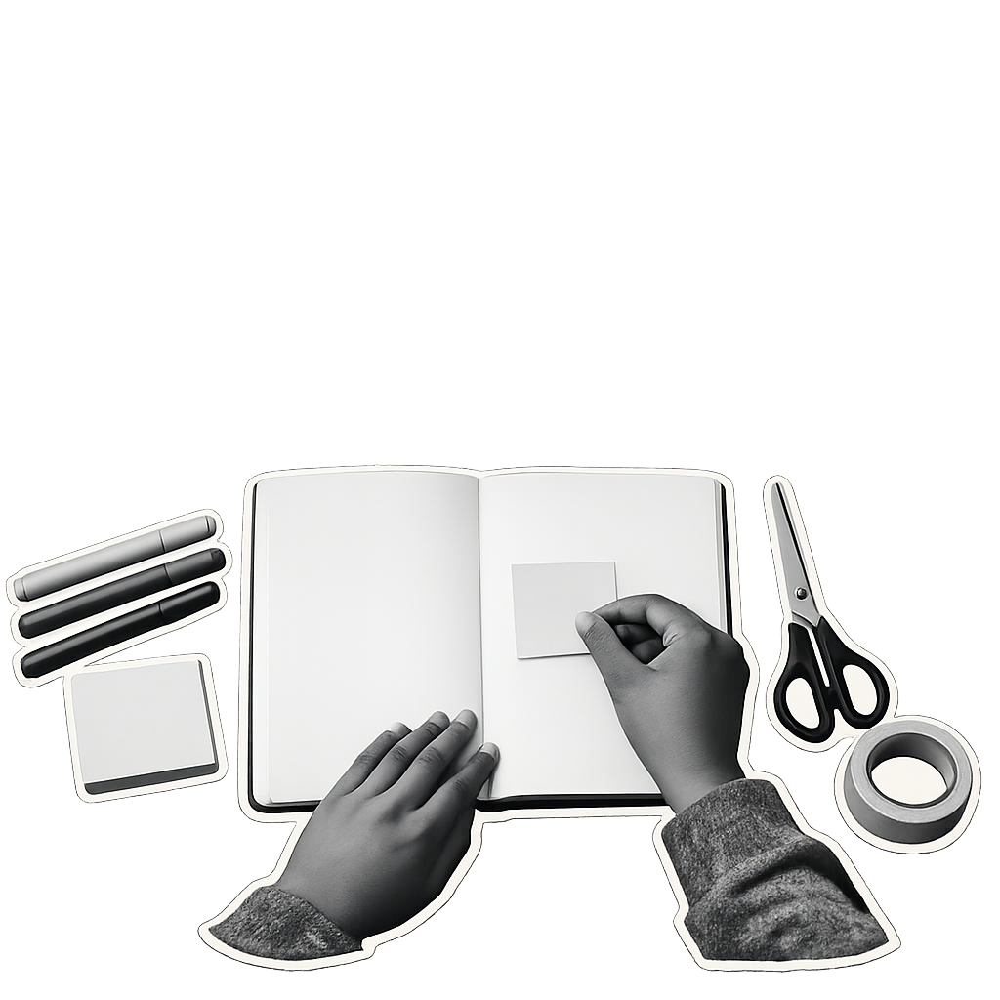

Nunca antes
tan conectados
Vivimos en la era de la conexión total. Y sin embargo, nunca habíamos necesitado tanto aprender a comprendernos.
06
Nunca antes
tan conectados
Más de 8.000 millones de personas comparten un mismo planeta. Cada día se envían 350.000 millones de correos electrónicos, se suben 500 millones de fotos y se traducen textos entre más de 7.000 lenguas. La tecnología ha eliminado las distancias, pero no ha eliminado las diferencias.
Ser ciudadano global no significa renunciar a lo propio. Significa ampliar la mirada: entender que nuestras decisiones locales tienen repercusiones globales, y que la diversidad no es un obstáculo sino un recurso.
Interdependencia global: la realidad en la que las acciones, decisiones y eventos de un lugar del mundo afectan directa o indirectamente a personas y comunidades en otros lugares. Ninguna nación, cultura o individuo es una isla.
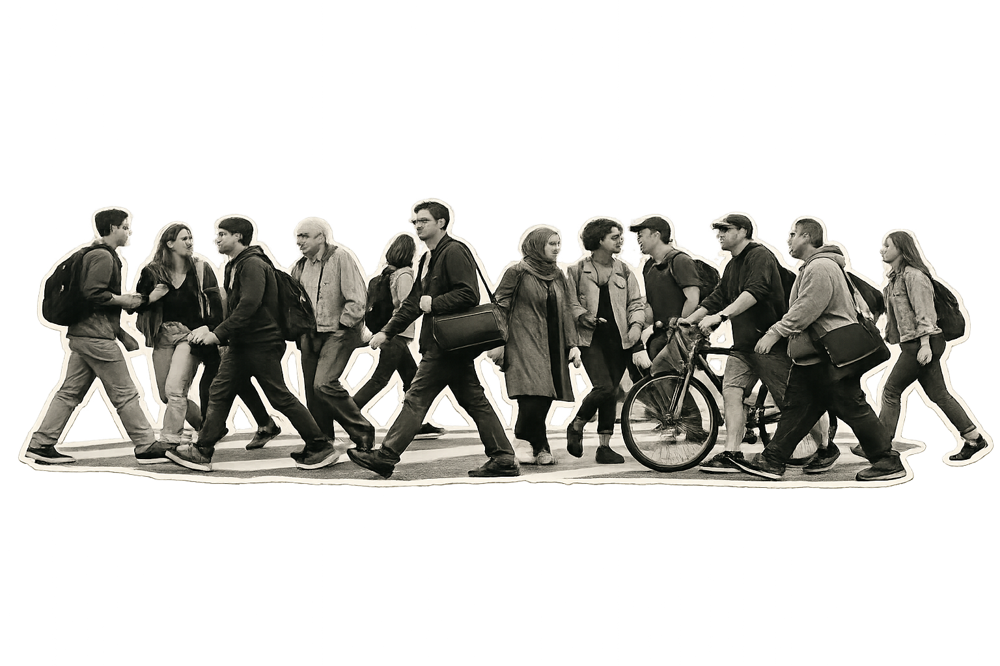
¿Quién soy yo
dentro de este
mundo?
Antes de entender el mundo, conviene entenderse a uno mismo. La identidad no es un dato fijo: es una conversación permanente entre lo que heredamos, lo que elegimos y lo que descubrimos.

- 01. ¿Tres palabras usarías para describirte?
- 02. ¿De dónde eres realmente? ¿De un lugar, de varios, de ninguno?
- 03. ¿Qué parte de ti viene de tu familia y qué parte has construido tú?
- 04. ¿Qué te hace sentir orgulloso de tu cultura? ¿Qué te gustaría cambiar?
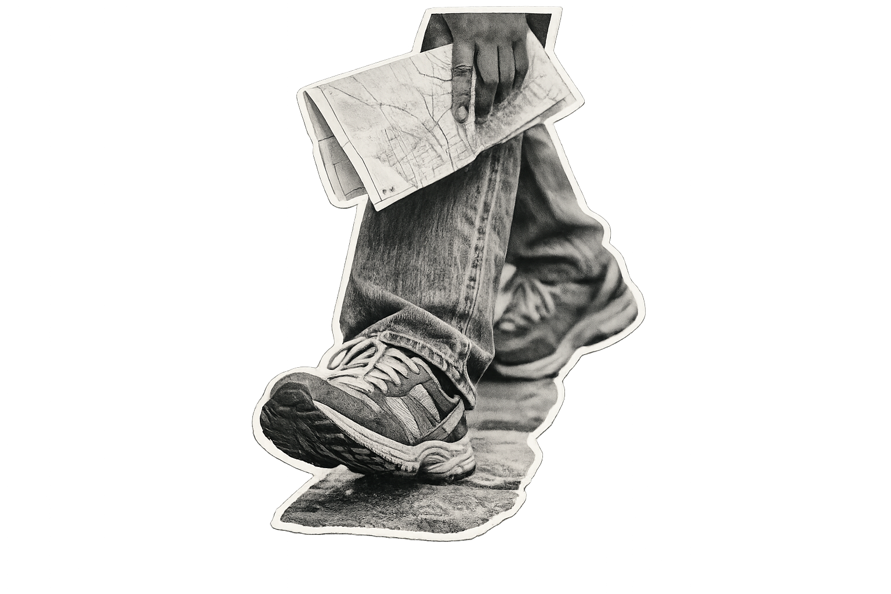
Atreverse a descubrir
El primer paso no es geográfico: es mental. Atreverse a cuestionar lo que damos por sentado.
¿Quién soy
en un mundo
global?

Cuatro paradas para comprender quién eres y cómo te relacionas con el mundo.
10
El mapa
de quién eres
La identidad es el conjunto de rasgos, valores, creencias y experiencias que nos definen como personas y como miembros de grupos. No es fija: se construye, se negocia y se transforma a lo largo de la vida.
Tenemos múltiples identidades simultáneas: la familiar, la cultural, la de género, la profesional, la digital. Todas conviven en nosotros y a veces entran en tensión. Ser ciudadano global implica reconocer esa complejidad sin simplificarla.
Identidad múltiple: cada persona habita simultáneamente varias identidades (local, nacional, cultural, de género, generacional, digital…). La riqueza intercultural nace de reconocer que nadie es una sola cosa.

¿Tres cosas te definen
que no aparecen en ningún documento
oficial?
Escribe tu respuesta en tu cuaderno. No hay respuestas correctas.
13
El lente
invisible
La cultura es el lente a través del cual interpretamos la realidad. No la vemos porque siempre la estamos usando. Determina qué nos parece normal, educado, justo o extraño.
No existe una cultura «superior» a otra. Existen culturas diferentes, cada una con su propia lógica interna. El etnocentrismo —juzgar otras culturas desde los criterios de la propia— es el principal obstáculo para la ciudadanía global.
Etnocentrismo: tendencia a considerar la propia cultura como centro y medida de todas las demás. Lo opuesto es el relativismo cultural: la capacidad de comprender cada cultura desde sus propios parámetros.
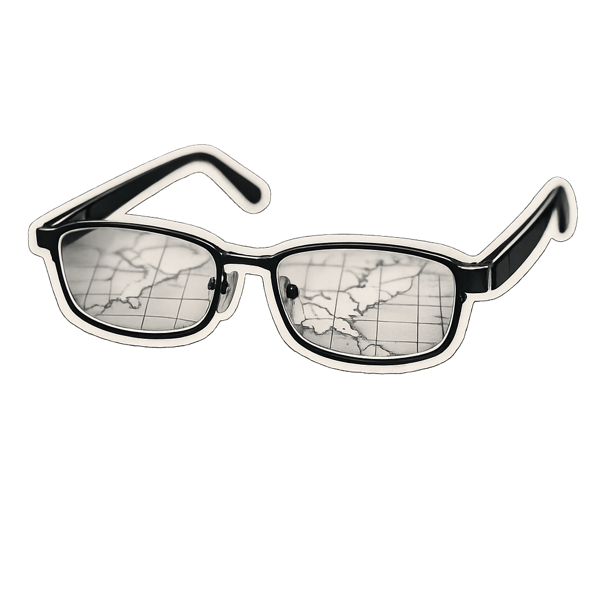
Objetos, vestimenta, arquitectura, gastronomía, tecnología. Lo que se ve y se toca de una cultura.
Normas, roles, instituciones, formas de organización familiar y comunitaria. Las reglas no escritas de la convivencia.
Valores, creencias, mitos, religiones, concepciones del tiempo y la muerte. El nivel más profundo e invisible de la cultura.
Todos llevamos
gafas culturales
Imagina que dos personas observan el mismo acto: alguien llega tarde a una reunión. Para una persona de cultura monocrónicaCulturas que valoran la puntualidad, la planificación y hacer una cosa a la vez (ej. Alemania, Suiza, EE.UU.)., la impuntualidad es una falta de respeto. Para otra de cultura policrónicaCulturas que priorizan las relaciones sobre el horario, donde hacer varias cosas a la vez es normal (ej. Latinoamérica, Mediterráneo, mundo árabe)., llegar tarde es simplemente parte de la vida. Ninguna tiene razón absoluta: cada una mira a través de sus propias gafas.
La diversidad
como recurso
La diversidad no es un problema que resolver: es un recurso que aprovechar. Los grupos diversos resuelven problemas complejos mejor que los homogéneos, porque aportan más ángulos, más experiencias y más creatividad.
Pero la diversidad por sí sola no basta. Sin inclusión activa, la diferencia se convierte en distancia. Incluir significa crear las condiciones para que todas las voces participen en igualdad.
Diversidad ≠ Inclusión. La diversidad es un hecho: hay diferencias. La inclusión es una decisión: crear condiciones para que esas diferencias participen, aporten y sean valoradas.
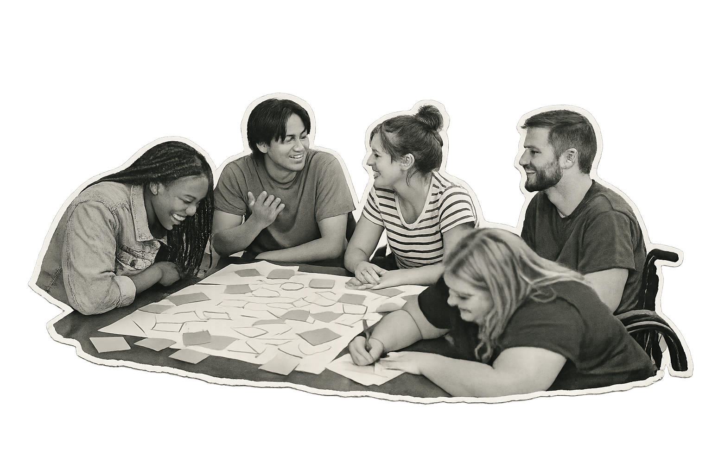
- Cultural: etnia, lengua, tradiciones, cosmovisión.
- De género: identidades, expresiones y orientaciones diversas.
- Generacional: cada generación interpreta el mundo desde su contexto histórico.
- Funcional: distintas capacidades físicas, cognitivas y sensoriales.
- Socioeconómica: acceso desigual a recursos y oportunidades.
El aula como
microcosmos
La universidad es uno de los espacios más diversos que existen. En una sola aula conviven personas de distintas regiones, clases sociales, religiones, orientaciones y trayectorias vitales. Esa diversidad es una oportunidad pedagógica enorme —si se sabe aprovechar.

Escucha activa
Prestar atención plena a quien habla, sin preparar la respuesta mientras habla. Validar antes de opinar.
Pregunta con respeto
Curiosidad genuina, no interrogatorio. «¿Me puedes contar más sobre…?» en vez de «¿Por qué vosotros…?».
Reconoce tus sesgos
Todos tenemos atajos mentales. Identificarlos es el primer paso para no dejar que decidan por nosotros.
Crea espacio
Si hablas mucho, calla un poco. Si callas mucho, habla un poco. El equilibrio es colectivo.
Mirarse
para entender
al otro
No se puede comprender verdaderamente al otro sin haberse comprendido a uno mismo. El autoconocimiento es la base de la competencia intercultural: saber desde dónde miramos para poder imaginar desde dónde mira el otro.
El autoconocimiento intercultural implica identificar nuestras propias «gafas culturales»: qué nos parece natural, qué nos incomoda, qué damos por sentado. Solo así podemos suspender el juicio y abrirnos a la diferencia.
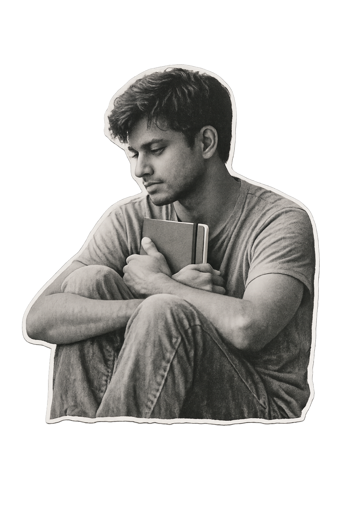
Escribir regularmente sobre experiencias interculturales ayuda a procesarlas. No se trata de escribir bien, sino de escribir con honestidad. Preguntas guía: ¿Qué sentí? ¿Qué me sorprendió? ¿Qué haría diferente?
La Ventana de Johari divide el conocimiento de uno mismo en cuatro cuadrantes: lo que yo sé y otros saben (abierto), lo que yo sé y otros no (oculto), lo que otros ven y yo no (ciego), y lo que nadie conoce (desconocido). Pedir feedback amplía el área abierta.
Haz una lista de tus 10 valores principales. Luego ordénalos por prioridad. Pregúntate: ¿de dónde vienen estos valores? ¿Los elegiste o los heredaste? ¿Qué harías si entraran en conflicto?
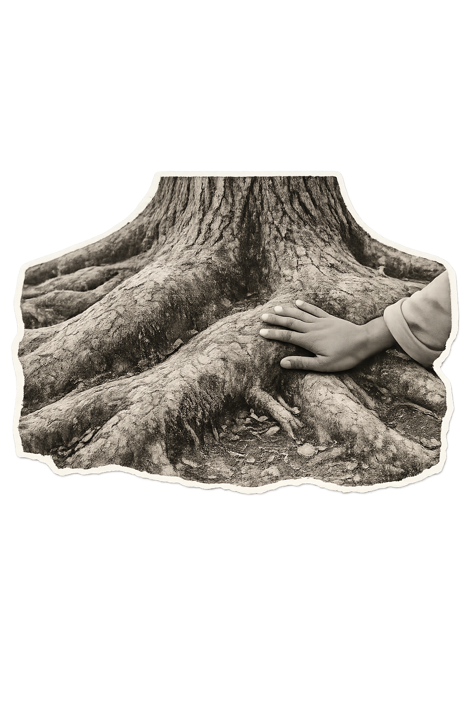
Raíces y apertura
Cuanto más profundas son tus raíces, más alto puedes crecer sin perder el equilibrio.
Conocer tus raíces no es encerrarte en ellas: es saber desde dónde partes para poder viajar más lejos.19
Laboratorio de
Aprendizaje Intercultural
Tres actividades prácticas para poner en movimiento lo que has leído. Elige la que más te llame o hazlas en orden.
Mi mapa cultural
Dibuja un mapa radial con todo lo que forma parte de tu identidad cultural.
15 min · individualEl árbol de mi identidad
Representa tus raíces, tronco y frutos identitarios en un dibujo libre.
20 min · individualMi historia
Construye una línea de tiempo visual con los momentos que te han definido.
25 min · individual o en pareja
Mi mapa
cultural
Dibuja un círculo en el centro de una hoja y escribe tu nombre. Desde ahí, traza líneas hacia círculos más pequeños que representen los elementos de tu identidad cultural: tu lengua, tu familia, tu barrio, tus tradiciones, tus comidas favoritas, la música que escuchas, los valores que te enseñaron…
No hay un número correcto de elementos. No hay jerarquía obligatoria. El mapa es tuyo: refléjalo como lo sientas.
- 1. Dibuja un círculo central con tu nombre.
- 2. Traza 5-8 ramas hacia círculos secundarios.
- 3. En cada círculo, escribe o dibuja un elemento identitario.
- 4. Usa colores para agrupar lo que sientas cercano.
- 5. Al final, observa: ¿qué rama es más gruesa? ¿Cuál te sorprende?
El árbol de
mi identidad
Dibuja un árbol. Sus raíces son lo que te sostiene: familia, territorio, lengua, tradiciones. El tronco eres tú: tus valores, tu carácter. Las ramas son tus proyectos y relaciones. Los frutos, lo que quieres dar al mundo.
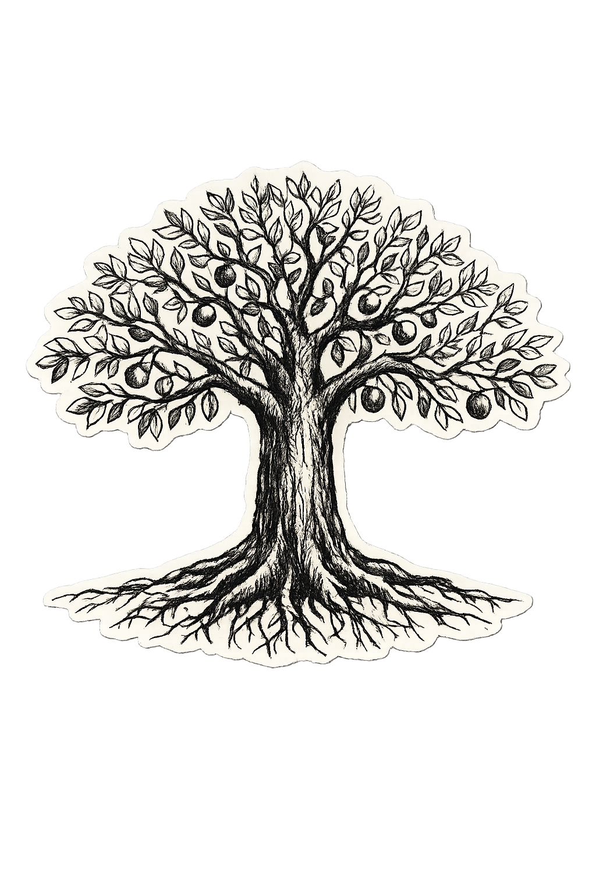
- Raíces: ¿De dónde vienes? ¿Quiénes te sostienen?
- Tronco: ¿Qué valores no negociarías?
- Ramas: ¿Hacia dónde creces? ¿Qué proyectos te impulsan?
- Frutos: ¿Qué quieres aportar al mundo?
Mi historia
Construye una línea de tiempo visual con los momentos clave que han definido quién eres. No tienen que ser grandes eventos: a veces una conversación, un viaje, un libro o una pérdida marcan más que un título académico.
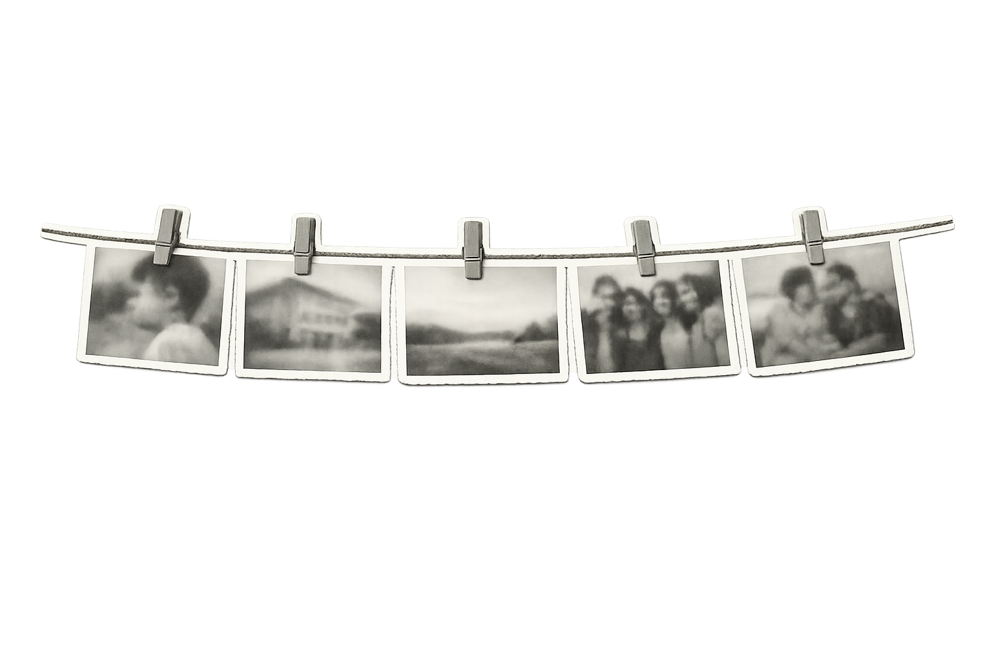
- 1. Dibuja una línea horizontal larga en una hoja.
- 2. Marca 5-8 momentos clave de tu vida.
- 3. Para cada momento, dibuja o escribe brevemente qué fue y por qué importa.
- 4. Usa colores: cálido para momentos felices, frío para difíciles, neutro para transformadores.
- 5. Al final, observa la línea completa: ¿qué patrones ves?
Lo que ves
en el otro
habla de ti
Cuando algo nos molesta o nos sorprende de otra cultura, frecuentemente es un reflejo de algo no resuelto en la nuestra —o en la nuestra propia. El otro funciona como espejo: nos muestra lo que damos por sentado, lo que tememos, lo que admiramos en silencio.
La próxima vez que algo te choque culturalmente, antes de juzgar, pregúntate: ¿qué me está mostrando esto sobre mí mismo?
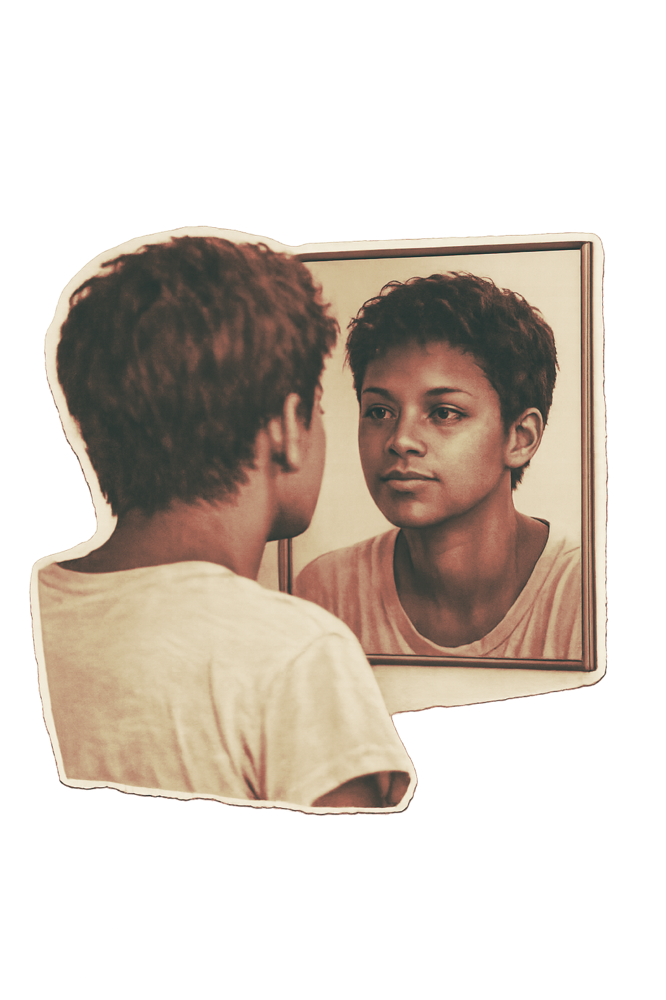
Escríbete una carta a ti mismo dentro de seis meses. Cuéntale qué has descubierto sobre tu identidad, qué te ha sorprendido, qué quieres seguir explorando. Guárdala y ábrela cuando pase el tiempo.
Lo que hoy descubres, mañana te sostiene.
Actividades
del capítulo
El documento propone cinco momentos de trabajo. Puedes desarrollarlos en papel, en grupo o como diario personal; aquí quedan organizados para volver a ellos cuando los necesites.
26
Lo que entrenas
con estas actividades
Marca las competencias que ya reconoces en ti. No es una evaluación: es una fotografía del punto desde el que continúas aprendiendo.
Elige una competencia para fortalecer durante las próximas cuatro semanas y escribe una acción concreta que puedas realizar desde tu entorno.
El mundo
nos conecta.
Tú lo transformas.
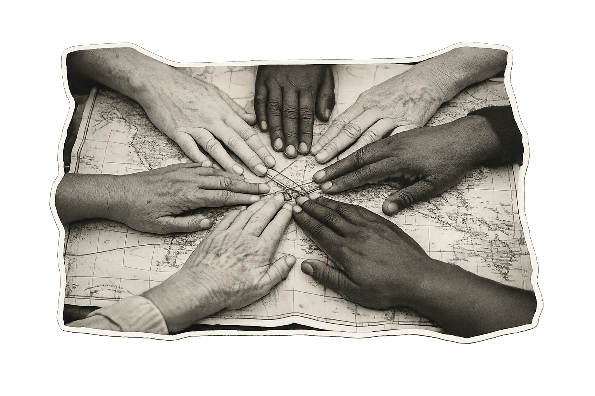
No necesitas cruzar una frontera para ser ciudadano global. Necesitas cruzar la frontera de tu propia mirada.
Ciudadano Global · Un recurso para transformar el mundo desde donde estás
28Referencias
Una selección de obras para profundizar en identidad, cultura, educación y ciudadanía global.
Consultar referencias bibliográficas Despliega la lista completa Oculta la lista completa
- Álvarez Ruíz, L., & Herazo Chamorro, M. (2022). Caracterización de las estrategias de internacionalización en CASA (IeC) desde la perspectiva de los estudiantes. En L. P. Álvarez Ruiz, L. F. Echeverría-King, T. I. Lafont-Castillo, & M. Herazo Chamorro (Comps./Eds.), Experiencias de la internacionalización en las instituciones de educación superior (IES) en Latinoamérica. Editorial CECAR.
- Bennett, M. J. (2017). Developmental model of intercultural sensitivity. Intercultural Development Research Institute.
- Erikson, E. H. (1968). Identity: Youth and crisis. W. W. Norton & Company.
- Geertz, C. (1973). The interpretation of cultures. Basic Books.
- Goleman, D. (1995). Emotional intelligence. Bantam Books.
- Nussbaum, M. C. (2010). Not for profit: Why democracy needs the humanities. Princeton University Press.
- Ricoeur, P. (1996). Sí mismo como otro. Siglo XXI Editores.
- Salmi, J. (2017). The tertiary education imperative: Knowledge, skills and values for development. Sense Publishers.
- UNESCO. (2001). Declaración Universal sobre la Diversidad Cultural. UNESCO.
- UNESCO. (2015). Educación para la ciudadanía mundial: Temas y objetivos de aprendizaje. UNESCO.